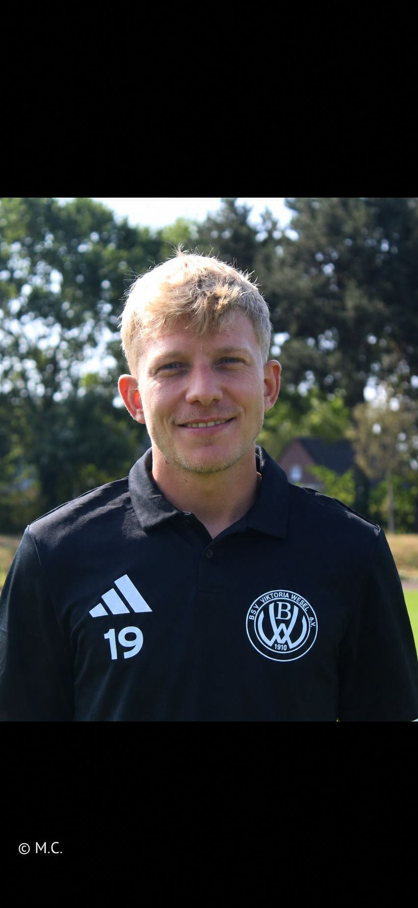
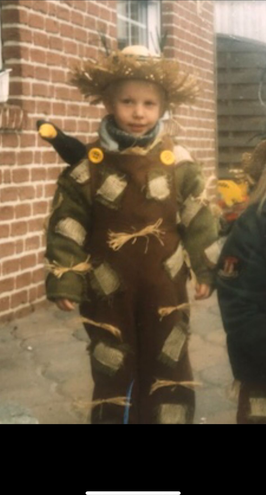
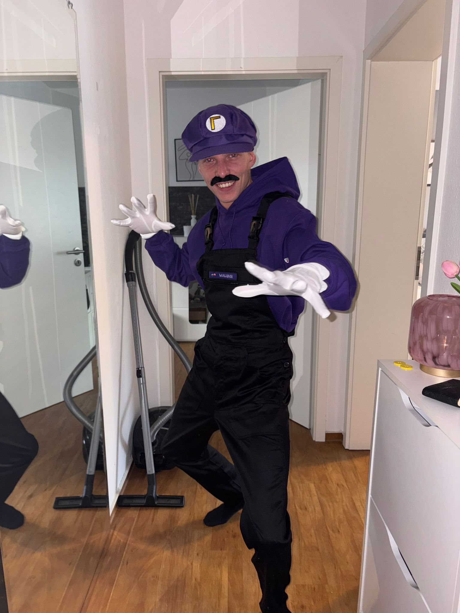
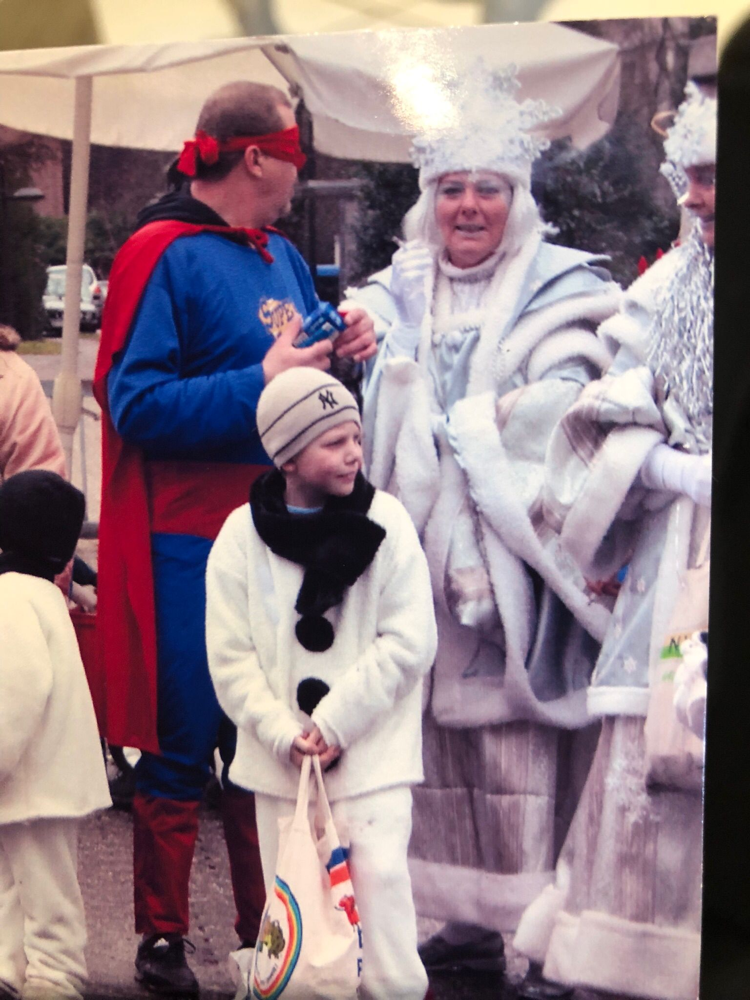
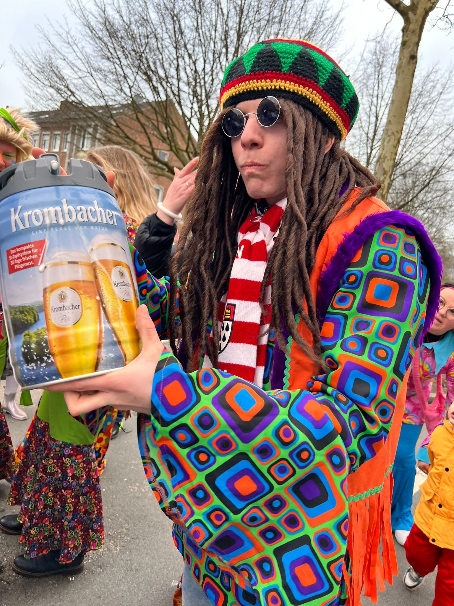

Startseite
Startseite
Lukas Berge
Karneval begleitet ihn schon sein ganzes Leben.
Heute gestaltet Lukas als Geschäftsführer des Carnevals-Ausschuss Wesel den Karneval seiner Heimatstadt aktiv mit.
Karneval von Kindesbeinen an
Schon als kleiner Junge gehörten Kostüme für Lukas einfach dazu. Seine Mutter nähte sie selbst – und natürlich wurden sie mit entsprechendem Stolz getragen. Seit 2017 ist Lukas auch aktiv beim Weseler Rosenmontagszug dabei.

„Tradition, Freude und gemeinsames Feiern.“
Das bedeutet Weseler Karneval für Lukas.Den Karneval der Stadt mitgestalten
Als Geschäftsführer übernimmt Lukas Verantwortung für Organisation und Abläufe im CAW. Besonders viel Freude macht ihm, den Karneval der Stadt Wesel aktiv mitzugestalten und gemeinsam mit den Vereinen weiterzuentwickeln.

Fußball gehört ebenfalls dazu
Neben dem Karneval gehört seine Leidenschaft auch dem Fußball. In seiner Freizeit spielt Lukas bei Victoria Wesel.
Ein Antrag vor mehr als 350 Menschen
Seinen bislang wohl emotionalsten Karnevalsmoment erlebte Lukas auf der WKV-Party: Mitten im Festzelt und vor mehr als 350 Menschen stellte er die wohl wichtigste Frage seines Lebens – seinen Hochzeitsantrag.


Gemeinsam statt gegeneinander
„Ich wünsche mir, dass wir wieder alle geschlossen an einem Strang ziehen und den Karneval gemeinsam feiern – friedlich und fröhlich.“← Zurück zum Vorstand